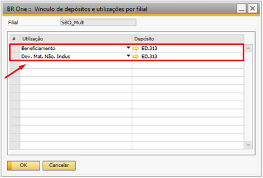

Configurações do beneficiamento
Para acessar as Configurações do beneficiamento é necessário ir no menu:
Administração -> Definição -> Beneficiamento -> Configurações do beneficiamento

Aba Benef. compras
Na aba Benef. compras estão reunidas as principais configurações gerais para o processo de beneficiamento de compras.
Utilização para materiais (remessa): No cadastro da Utilização, os campos “PN Gratuito” e “Transf. Estoque”, devem estar marcadas e configurado um depósito de envio direto.
Utilização para materiais (retorno): No cadastro da Utilização, somente o campo “PN Gratuito”, deve estar marcado.
Utilização de serviço: No cadastro da Utilização, os campos “Transf. Estoque” e “Só Imposto”, devem estar desmarcados.
Utilização para Dev. Mat. Não industrializado: No cadastro da Utilização, os campos “Transf. Estoque” e “PN Gratuito”, devem estar marcados e configurado um depósito de envio direto.
Para bases que não tenham filiais, o depósito é configurado na própria tela de “Utilização – Definição”, o campo “Código depósito”, deve ter um depósito de envio direto.

Para bases multifiliais, é necessário realizar a configuração de vínculo de depósito e utilização.
{kind=link}
Depósito de envio direto
Para configuração do depósito de envio direto é necessário que o campo “Expedição direta” esteja selecionado conforme a imagem abaixo:
{kind=link}
Parâmetros de configuração:
Gerar NF de entrada e dev.de NF de entrada
Parâmetro utilizado para definir o documento que será gerado no processo. Por padrão, este parâmetro virá desmarcado e os documentos gerados são: Devolução de Mercadoria e Recebimento de Mercadoria. Caso o parâmetro esteja marcado os documentos gerados serão Dev.Nota Fiscal de Entrada e Nota Fiscal de Entrada.
Este parâmetro só pode ser marcado ou desmarcado caso não exista nenhum documento de remessa em aberto.
Ao marcar o parâmetro, o sistema validará se existe alguma remessa em aberto (Normal e Avulsa) no documento de Devolução de Mercadoria e, caso encontre, exibirá a seguinte mensagem:

BR One :: Não é possível marcar a opção, pois existe(m) documento(s) de Remessa (Devolução de Mercadoria) em aberto.
Caso não seja encontrado nenhuma remessa, a marcação será salva e passará a gerar documento de Dev. Nota Fiscal de Entrada.
Ao desmarcar a flag, o sistema validará se existe alguma remessa em aberto (Normal e Avulsa) no documento de Dev. Nota Fiscal de Entrada e, caso encontre, exibirá a seguinte mensagem:

BR One :: Não é possível desmarcar a opção, pois existe(m) documento(s) de Remessa (Devolução de nota fiscal de entrada) em aberto.
Permitir fechar/eliminar linhas dos pedidos de compra em aberto
Esse parâmetro tem a função de permitir fechar uma Ordem de Produção (OP) mesmo que exista pedidos de compra (Itens de serviços) em aberto, desde que não haja componentes pendentes de retorno ou remessas com quantidade pendente. Por outro lado, se o parâmetro estiver desmarcado, não será possível fechar a Ordem de Produção (OP).
Gerar transferência de estoque por DI
Só será permitido marcar essa opção se o parâmetro “Tipo do documento” nas configurações do documento estiver como “Transferência de estoque”.

Ao marcar a flag, a transferência de estoques passa a ser adicionada automaticamente sem que a tela de transferência seja aberta para o usuário. A relação abaixo mostra quais documentos geram a transferência e em quais momentos do processo:
Remessa: Devolução de NF de Entrada ou Devolução de Mercadoria
Retorno: Nota Fiscal de Entrada ou Recebimento de Mercadoria (peças não industrializadas)
Entrada de PA: Entrada de Produto acabado
Aba Seq. Numeração
Na aba Seq. Numeração, devem ser configuradas as sequências referentes a cada filial ativa.
O campo de ‘Sequência p/ transferência de estoque’ possuirá as sequências de numeração para a transferência de estoque, onde serão listadas todas as sequências que pertencem a filial correspondente. Conforme imagem abaixo:
{kind=link}
Caso ao atualizar ou perder o foco do campo de sequência e seu valor estiver incorreto, a seguinte mensagem será exibida:

BR One :: Valor inválido informado.
Caso o usuário tente criar uma entrada de PA sem ter nenhuma sequência de numeração atribuída, a seguinte mensagem será exibida:

BR One :: Atribua a sequência de numeração na tela de configuração do beneficiamento.
O campo Sequência p/ remessa de Dev. mercadoria possuirá as sequências de numeração para o documento de remessa (devolução de mercadorias) de acordo com a filial da OP.
O campo Sequência p/ remessa Dev. NF de Entrada possuirá as sequências de numeração para o documento de remessa (devolução de nota fiscal de entrada) de acordo com a filial da OP.